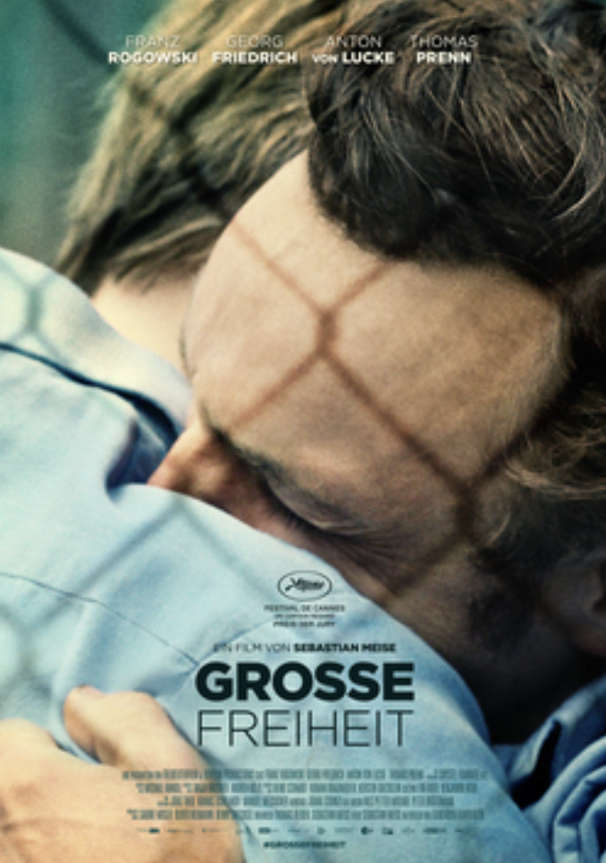

Movie poster for Große Freiheit (Great Freedom, 2021)
This is a #summerviewing this has been on my “to watch list” for a while (of course Mubi blocked it from the Egyptian film library but we find our ways!) and I knew it was going to be a tearjerker of a film (a gay man who survived the Nazi concentration camps only to get repeatedly imprisoned, because believe it or not homosexuality was criminalized in West Germany until 1975!). The director, Sebastian Meise, stacks the miseries one on top of the other (prison, persecution, suicide, substance abuse,…etc) by the time the film ends there is nothing really left to look forward to.
And yet Große Freiheit (Great Freedom, 2021), pays a tribute to Frank Darabont’s The Shawshank Redemption (1994), Frank Ripploh’s Taxi Zum Klo (1980), playing on narrative tropes about the peculiar and specific ways prisons shape and mould our sense of self and the kind of relationships we are able to establish and sustain (the great freedom is the freedom to relate after all, something that sometimes can’t happen outside prison. Prison instigates inevitable intimacy that unsettles all perceived norms, moral and sexual. Sonallah Ibrahim used the same motif in his novel Sharaf, 1997, (Honor) to the same effect, and wrote some of the most delicate homoerotic prose in contemporary Arabic literature). It came as no surprise that the relationship the protagonist managed to sustain throughout 20 years was with a fellow inmate (who is unsurprisingly straight).
I am ambivalent about that “misery fest” (not that this couldn’t have happened, but the way it is dramatized), but Franz Rogowski as the protagonist, Hans, was mesmerizing and brought a physicality to his presence that was gripping as it is haunting.